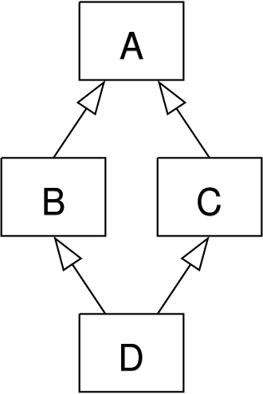

A Whirlwind Tour of C++
C++ was originally created in the 1980s as an extension of the C language to add support for classes. Since its inception, C++ has grown enormously to include a host of features such as exception handling, templates, an expansion of library functions, stronger type checking, inheritance, and other object-oriented concepts. This article will serve as a primer for C++ as well as a source of resources for a more complete documentation.
This article is organized into three parts: Classes & Objects, General Use C++, and C++ for LLVM. Classes & Objects will cover classes in C++, access modifiers, and object-oriented concepts such as single and multiple inheritance, and polymorphism. C++ for LLVM will serve as an introduction to the LLVM API. Conversely, General Use C++ will detail features that are not specific to the LLVM API.
You are encouraged to try out different C++ features in this Online C++ IDE as you read through the rest of this article.
Part 1: Classes & Objects
“Classes are an expanded concept of data structures: like data structures, they can contain data members, but they can also contain functions as members. An object is an instantiation of a class. In terms of variables, a class would be the type, and an object would be the variable.”
Readers that are familiar with other languages such as Java are presumably familiar with many of the object-oriented concepts discussed in this section. Nevertheless, there are some notable features that may be new to readers such as multiple inheritance, compilation, destructors, and manual object management.
C++ Class Syntax
Class implementation is usually split between two files: a header and an implementation file. The header file typically contains the class declaration including list of member variables and member function headers. A function header includes the name of the function and tells the compiler what type of data it expects to receive and what type of data it will return. The function body with the actual instructions to execute when called are written in the implementation file. The header and implementation files typically share the same name and end in “.h” and “.cpp” respectively.
Here is an example of a Time class split between a header and implementation file. In this example, notice that the header file is referenced in the implementation file using:
#include “Time.h”
This line tells the C++ compiler to use in Time.cpp the function and class declarations written inside of Time.h. Suppose that we additionally include a file that itself also includes Time.h. Now, we have multiple definitions of the members and functions defined in Time.h. In order to prevent this, C++ has a mechanism to prevent headers from being compiled more than once. These mechanisms, called “include guards”, are illustrated in the following lines in Time.h:
#ifndef TIME_H #define TIME_H . . . #endif
These lines tell the compiler to compile the Time.h functions only if they have not been compiled yet, to prevent double declaration.
C++ Scope Resolution Operator
To access a member function, member variable, or member class, you can use the double colon (::) operator. Examples include ClassName::functionName, ClassName::variableName, namespace::ClassName, or EnumName::Member. Within class scope, the member functions and variables are accessible without explicit scope resolution; but note that in implementation files, the scope resolution operator must be used when defining functions that are declared in the header file.
Class Compilation
The compilation of a C++ program consists of two stages: compilation and linking. Compilation includes preprocessing (macro and include expansion), transforming the program into an intermediate language such as LLVM IR, optimizing the intermediate program, and generating object code such as x86 assembly. Linking puts together one or many object code files into an executable program. In this stage, the compiler matches function calls with their definitions and ensures that each function that is called has exactly one definition. Linking is a common source of errors for users that are new to C++ classes.
Access Specifiers
Access specifiers identify access rights for the members they are applied to. Access can be either private, public, or protected. By default, a class has private access to all of its members. This means that members of the class are only accessible from within members of the same class. Conversely, a public member variable is accessible from everywhere that the object is visible. A protected member variable is accessible from members of the same class and members of its child classes.
These rules change slightly when the friend keyword is introduced. This feature will be detailed in the Friendship section below.
Constructors and Destructors
Each class has a specific constructor function that is called each time a new object of the class is created. The constructor has the same name as the class and is typically used to initialize member variables and/or perform some setup. The default constructor is a special constructor that is called when an object of the class is declared but is not initialized with any arguments. For example, consider the following declarations of the Rectangle class from here:
Rectangle r1; // ok, default constructor called Rectangle r2(); // oops, default constructor NOT called
The default constructor is called for r1. Note that r1 is not even constructed with an empty set of parentheses. This is because the empty set of parentheses make r2 a function declaration instead of an object declaration: it is a function that takes no arguments and returns a value of type Rectangle.
Another special constructor type is the copy constructor. This is executed when an object of the same type is passed to the constructor. By default, it performs a shallow copy of all member variables. If a class has a pointer type member variable, a shallow copy may not be enough. Multiple classes may share the same object the pointer refers to which can cause issues if this is not what the developer intended. If a different semantics is preferred, the developer can write their own copy constructor with the signature:
Rectangle::Rectangle(const Rectangle& x)
Likewise, the destructor function is called each time an object of the class is destroyed. It has the same name as the class (and the constructor), but is preceded with the tilde sign (~). It is typically used to perform some cleanup of heap allocated memory.
When a class has dynamic member variables, these member variables are default-constructed when an instance of the class is created (when the constructor is called), and then re-constructed when they are initialized. To avoid this wasteful double-construction of member variables, constructors can use initialization lists before their bodies, ensuring that the member variables (width and height below) are only constructed once:
Rectangle::Rectangle(int x, int y) : width(x), height(y) { }
this keyword
“The keyword this represents a pointer to the object whose member function is being executed. It is used within a class's member function to refer to the object itself.”
It is often used to resolve ambiguity between a member variable of the object executing the call and an object of the same class passed as a parameter. An example illustrating this is shown in the member function isitme.
Static members
A static member of a class is a variable that is shared between all objects of the class. Likewise, a static member function is not associated with any specific object. Therefore, they do not have a this pointer.
Friendship
The friend keyword defines access relationships between functions and classes. If a class A is a “friend” of class B, member functions in class A can access private and protected members of class B. Friendship is defined in the class giving access (Class B in this example). An example of friend classes is shown here.
Similarly, if a function is a “friend” of class B, it can access private and protected members of class B within its function body. An example of a friend function is shown here.
Inheritance
Inheritance creates an “is-a” relationship between the derived and base class. The derived class inherits member variables and functions from the base class. It can also include its own member variables and functions. An example can be found here. The Rectangle class is derived from the base class, Shape.
Recall that derived classes can access protected members in the base class.
A base class can inherit with access modifiers public, private, or protected. A public inheritance (shown in the example) behaves as expected. The variables inherited from the base class keep their access status. Conversely, in private inheritance, all inherited members become private. In protected inheritance, public members become protected and all other members are unchanged.
Multiple Inheritance and Virtualism
As described in the introduction, C++ was originally created to add support for classes to C. Thus, C++ includes many object-oriented concepts that did not exist in C. In this section, we assume that the reader has a basic understanding of classes and inheritance.
Unlike Java, C++ supports multiple inheritance. This means that an object can have one or more parent class. At first glance this seems like a useful feature that should exist in all programming languages that support inheritance. However, multiple inheritance is often a source of confusion and implementation troubles.
Consider the infamous “Diamond Problem”:

Both B and C inherit from A and thus contain A’s member variables. This could lead to ambiguities and duplicate copies of A’s member variables in class D. To solve this, we can use Virtual Inheritance as follows:
Class B : public virtual A { }
Class C : public virtual A { }
Polymorphism
Class inheritance provides many useful features. One of these, is that a pointer to a derived class is type-compatible with a pointer of the base class. More concretely, if class B is derived from base class A, a pointer to class A can also refer to an object of type class B. This is intuitive as class B has an “is-a” relationship to class A.
Part 2: General C++
C++, like other statically typed languages, requires the developer to specify types in nearly all declarations. However, this can lead to unnecessary repetition of code that is somewhat type independent. Consider the code for the STL vector. Regardless of the element type, the code to add an element, remove an element, calculate size, and even sort are likely identical. Templates provide a way to write programs that are generic or independent of any particular type. Below is an example of a templated swap function. So long as the types of n1 and n2 are equivalent, this function will be applied successfully.
template <typename T> void Swap(T &n1, T &n2) { T temp; temp = n1; n1 = n2; n2 = temp; }
C++ Type Checking
In the introduction, we briefly noted that C++ has stronger type checking than C. In this section, we will describe how the stronger type checking manifests in differences in enums and void pointers. In C, an enum is simply an alias to integer types. However, the C++ enum defines an actual type. So,